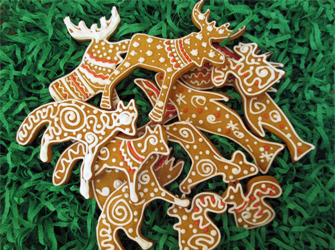

Архангельск
блюдо "Козули"
блюдо "Козули"
"Архангельские козули" - это уникальные пряники, которые принято готовить к Новому году и Рождеству. Эти расписные ароматные вкусности украсят любой стол и поднимут настроение каждому члену семьи. Их преимущество состоит не только в неповторимом вкусе, но и в проявлении креатива, ведь изобразить на них можно все, что угодно.
